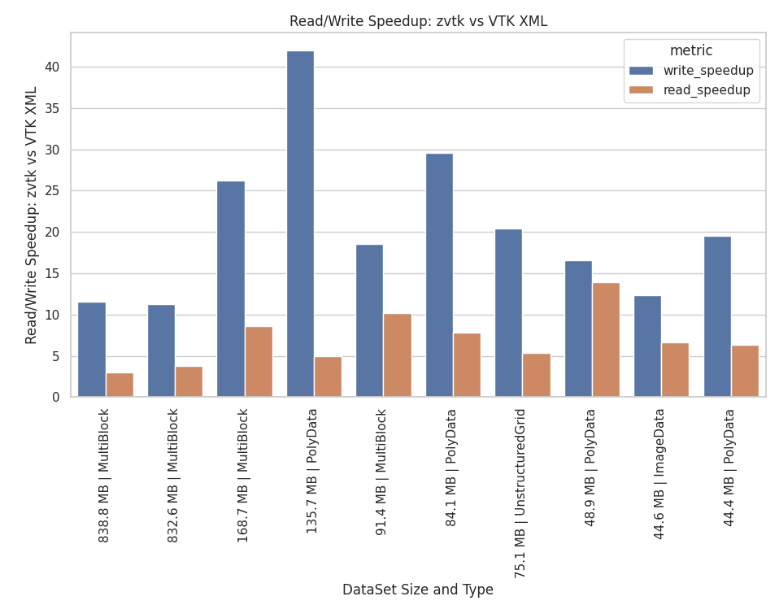
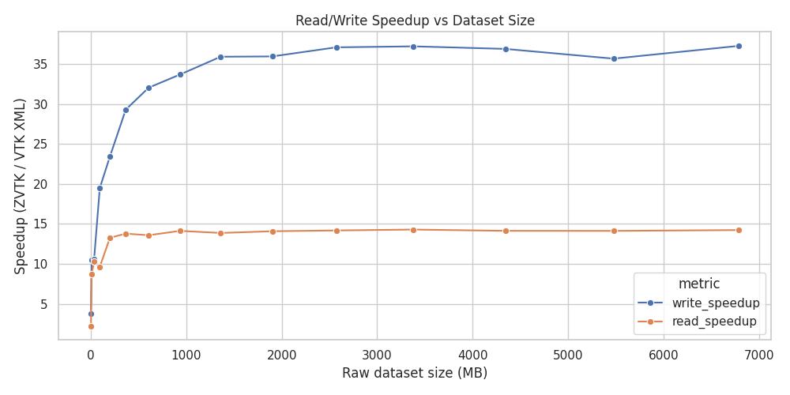
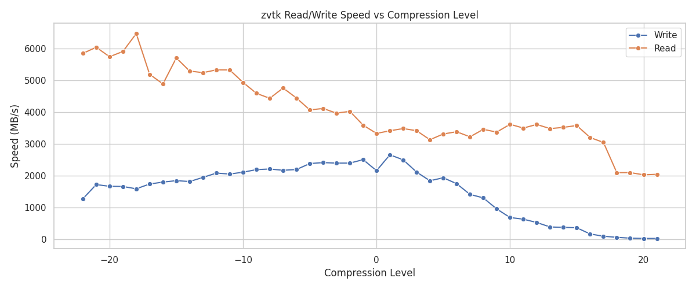
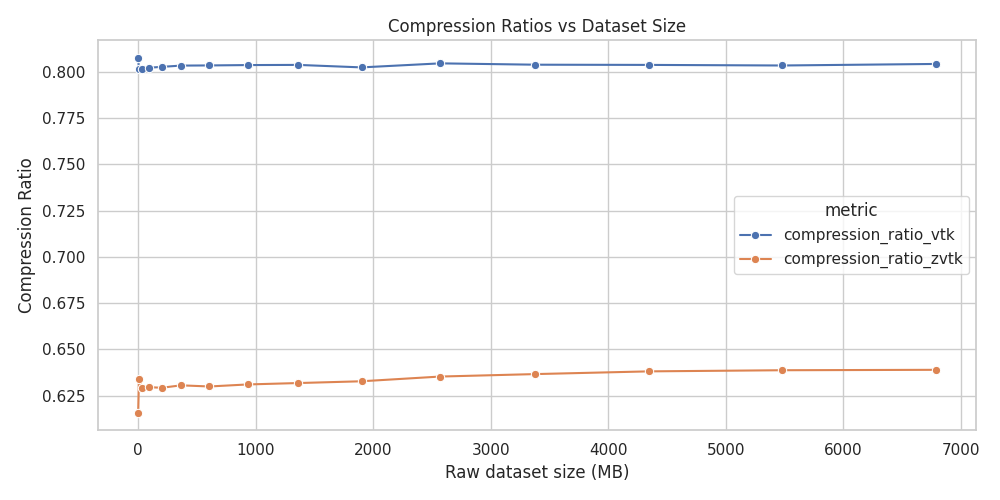

zvtk#
Seamlessly compress VTK datasets using Zstandard.
Read in VTK datasets 37x faster, write 14x faster, all while using 28% less space versus VTK’s modern XML format.

Read/Write Speedup and Compression Ratios#
Usage#
Install with:
pip install zvtk
Compatible with all VTK dataset types. Uses PyVista under the hood.
import zvtk
# create and write out
ds = pv.Sphere()
zvtk.write(ds, "dataset.zvtk")
# read in and show these are identical
ds_in = zvtk.read("dataset.zvtk")
assert ds == ds_in
Alternative VTK example
import vtk
import zvtk
# create dataset using VTK source
sphere_source = vtk.vtkSphereSource()
sphere_source.SetRadius(1.0)
sphere_source.SetThetaResolution(32)
sphere_source.SetPhiResolution(32)
sphere_source.Update()
vtk_ds = sphere_source.GetOutput()
# read back
zvtk.write(vtk_ds, "sphere.zvtk")
ds_in = zvtk.read("sphere.zvtk")
Rational#
VTK’s XML writer is flexible and supports most datasets, but its compression is limited to a single thread, has only a subset of compression algorithms, and the XML format adds significant overhead.
To demonstrate this, the following example writes out a single file
without compression. This example requires pyvista>=0.47.0 for the
compression parameter.
>>> import numpy as np
>>> import pyvista as pv
>>> ugrid = pv.ImageData(dimensions=(200, 200, 200)).to_tetrahedra()
>>> ugrid["pdata"] = np.random.random(ugrid.n_points)
>>> ugrid["cdata"] = np.random.random(ugrid.n_cells)
>>> nbytes = (
... ugrid.points.nbytes
... + ugrid.cell_connectivity.nbytes
... + ugrid.offset.nbytes
... + ugrid.celltypes.nbytes
... + ugrid["pdata"].nbytes
... + ugrid["cdata"].nbytes
... )
>>> print(f"Size in memory: {nbytes / 1024**2:.2f} MB")
Size in memory: 1993.89 MB
Save using VTK XML format
>>> from pathlib import Path
>>> import time
>>> tmp_path = Path("/tmp/ds.vtu")
>>> tstart = time.time()
>>> ugrid.save(tmp_path, compression=None)
>>> print(f"Written without compression in {time.time() - tstart:.2f} seconds")
>>> nbytes_disk = tmp_path.stat().st_size
>>> print(f" File size: {nbytes_disk / 1024**2:.2f} MB")
>>> print(f" Compression Ratio: {nbytes / nbytes_disk}")
>>> print()
Written without compression in 7.93 seconds
File size: 2858.94 MB
Compression Ratio: 0.6974239255525742
This amounts to around a 43% overhead using VTK’s XML writer. Using the default compression we can get the file size down to 791 MB, but it takes 19 seconds to compress.
>>> tstart = time.time()
>>> ugrid.save(tmp_path, compression='zlib') # default
>>> print(f"Compressed in {time.time() - tstart:.2f} seconds")
>>> nbytes_disk = tmp_path.stat().st_size
>>> print(f" File size: {nbytes_disk / 1024**2:.2f} MB")
>>> print(f" Compression Ratio: {nbytes / nbytes_disk}")
>>> print()
Compressed in 18.83 seconds
File size: 791.05 MB
Compression Ratio: 2.5205590295735663
Clearly there’s room for improvement here as this amounts to a compression rate of 105.89 MB/s.
VTK Compression with Zstandard: zvtk#
This library, zvtk, writes out VTK datasets with minimal overhead
and uses Zstandard for
compression. Moreover, it’s been implemented with multi-threading
support for both read and write operations.
Let’s compress that file again but this time using zvtk:
>>> import zvtk
>>> tmp_path = Path("/tmp/ds.zvtk")
>>> tstart = time.time()
>>> zvtk.write(ugrid, tmp_path)
>>> print(f"Compressed zvtk in {time.time() - tstart:.2f} seconds")
>>> nbytes_disk = tmp_path.stat().st_size
>>> print(f" File size: {nbytes_disk / 1024**2:.2f} MB")
>>> print(f" Compression Ratio: {nbytes / nbytes_disk}")
Compressed zvtk in 0.92 seconds
Threads: -1
File size: 660.41 MB
Compression Ratio: 3.019175309922273
This gives us a write performance of 2167 MB/s using the default number of threads and compression level, resulting in a 20x speedup in write performance versus VTK’s XML writer. This speedup is most noticeable for larger files:

Speedup versus VTK’s XML#
Even when disabling multi-threading we can still achieve excellent performance:
>>> tstart = time.time()
>>> zvtk.write(ugrid, tmp_path, n_threads=0)
>>> print(f"Compressed zvtk in {time.time() - tstart:.2f} seconds")
>>> nbytes_disk = tmp_path.stat().st_size
>>> print(f" File size: {nbytes_disk / 1024**2:.2f} MB")
>>> print(f" Compression Ratio: {nbytes / nbytes_disk}")
Compressed zvtk in 2.91 seconds
Threads: 0
File size: 660.47 MB
Compression Ratio: 3.0188911592355683
This amounts to a single-core compression rate of 685.18 MB/s, which is in agreement with Zstandard’s benchmarks.
Note that the benefit of threading drops off rapidly past 8 threads, though part of this is due to the performance versus efficiency cores of the CPU used for benchmarking (see below).

Read/Write Speed versus Number of Threads#
Reading in the dataset is also fast. Comparing with VTK’s XML reader using defaults:
Read VTK XML
>>> print(f"Read VTK XML:")
>>> timeit pv.read("/tmp/ds.vtu")
6.22 s ± 9.21 ms per loop (mean ± std. dev. of 7 runs, 1 loop each)
Read zstd
>>> print(f"Read zstd:")
>>> timeit zvtk.read("/tmp/ds.zvtk")
563 ms ± 7.96 ms per loop (mean ± std. dev. of 7 runs, 1 loop each)
This is an 11x speedup for this dataset versus VTK’s XML, and it’s still fast even with multi-threading disabled:
>>> timeit zvtk.read("/tmp/ds.zvtk", n_threads=0)
1.11 s ± 4.51 ms per loop (mean ± std. dev. of 7 runs, 1 loop each)
This amounts to 1796 MB/s for a single core, which is also in agreement with Zstandard’s benchmarks.
Additionally, you can control Zstandard’s compression level by setting
level=. A quick benchmark for this dataset indicates the defaults
give a reasonable performance versus size tradeoff:

Read/Write Speed versus Compression Level#
Note that both zvtk and VTK’s XML default compression give
relatively constant compression ratios for this dataset across varying
file sizes:

Compression Ratio versus VTK’s XML#
These benchmarks were performed on an i9-14900KF running the Linux
kernel 6.12.41 using zstandard==0.24.0 from PyPI. Storage was a
2TB Samsung 990 Pro without LUKS mounted at /tmp.
Additional Information#
The benchmarks/ directory contains additional benchmarks using many
datasets, including all applicable datasets in pyvista.examples (see
PyVista Dataset
Gallery).